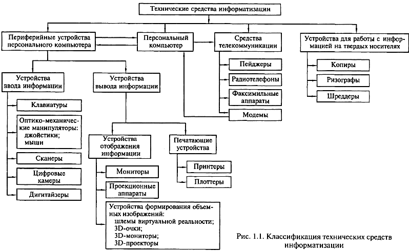

В процессе своего развития человеческое общество прошло этапы проникновения в тайны материи, научилось управлять различными видами энергии и, наконец, вступило в эпоху информатизации. До середины XIX в., когда доминирующими были процессы сбора и накопления информации, средства информатизации представляли собой перо, чернильницу и бумагу. На смену примитивным средствам информационной техники в конце XIX в. пришли механические: пишущая машинка, телефон, телеграф, что послужило базой для принципиальных изменений в технологии обработки информации. Лишь спустя много лет информационные процессы запоминания и передачи информации были дополнены процессами ее обработки. Это стало возможным с появлением во второй половине XX в. такой информационной техники, как электронные вычислительные машины (ЭВМ), положившие начало информационным технологиям. Информационные технологии базируются на следующих технических достижениях:
Естественно, что информационные технологии строятся на сочетании аппаратных средств, программных средств и творческой мысли создателей как этих средств, так и компьютерных технологий.
Специалисты называют аппаратные средства компьютерной техники Hardware (скобяные товары или жесткая проволока), а программное обеспечение - Software (мягкая проволока). Сочетание «Hardware & Software», переводимое как «твердый и мягкий», - профессиональный термин. В России программы на профессиональном сленге иногда называют новым словом «софтвер», а компъютер и периферию - «железом». Приоритетность роли программных или аппаратных средств в информационных технологиях не подлежит обсуждению, поскольку без программного обеспечения любой самый совершенный компьютер представляет собой набор электронных плат.
Технические средства информатизации представляют собой совокупность компьютерной техники и ее периферийных устройств - Наrdware, обеспечивающих cбор, хранение и переработку информации, и коммуникационной техники (телефон, телеграф, радио, телевидение, спутниковая связь, сети ЭВМ), осуществляющей дистанционную передачу информации.
Создание электронно-вычислительных машин в середине XX в. является одним из самых выдающихся достижений в истории человечества. Постоянное развитие индустрии компьютерной техники и других технических средств информатизации за короткий срок превратилось в один из определяющих факторов научно-технического прогресса. Многие крупных научно-технические проекты современности в области космических исследований, атомной энергетики, экологии не могли бы претворяться в жизнь без применения технических средств информатизации. На протяжении последних десятилетий информационные технологии, базирующиеся на современных технических средствах информатизации, все активней вторгаются в различные сферы человеческой деятельности. Несомненна тесная взаимосвязь совершенствования программного обеспечения, технических средств информатизации и наукоемких технологий, на базе которых они производятся. Разработка нового программного обеспечения требует создания все более совершенных технических средств, что, в свою очередь, стимулирует разработку новых высокопроизводительных и экономичных технологических процессов для производства технических средств информатизации.
При обработке информации с помощью технических средств удобно пользоваться распространенным в информатике подходом к понятию «информация» как мере уменьшения неопределенности.
Для количественного определения: любой величины необходимо выбрать единицу измерения. Известно, что единицей измерения длины является метр, массы - килограмм. За единицу количества информации бит принято такое ее количество, которое имеет место при уменьшении неопределенности в два раза.
В компьютере информация представлена в двоичном коде, т.е. на машинном языке, алфавит которого» состоит из двух цифр (0 и 1). Эти цифры представляют собой по сути два равновероятных состояния. При записи одного двоичного разряда реализуется выбор одного из двух возможных состояний (одной из двух цифр), т. е. неопределенность уменьшается в два раза. Отсюда следует, что один двоичный разряд несет количество информации в 1 бит. При этом количество информации в битах равно количеству двоичных разрядов.
С другой стороны, число различных цифр ТУ, которое можно записать с помощью i двоичных разрядов: N = 2i
Cовременные технические средства информатизации выполняют функции обработки и хранения числовой, текстовой, графической, звуковой и видеоинформации с помощью компьютера. Для работы с информацией, столь разной по физической сущности, необходимо привести ее к единой форме. Все эти виды информации кодируются в последовательности электрических импульсов: есть импульс -1, нет импульса - 0, т.е. в последовательности нулей и единиц. Такое кодирование информации в компьютере называется двоичным кодированием, а логические последовательности нулей и единиц - машинным языком.
Двоичное кодирование числовой информации заключается в том, что числа в компьютере представлены в виде последовательностей 0 и 1, или бит. В начале 1980-х гг. процессоры компьютеров были 8-разрядными, за один такт работы процессора компьютер мог обработать 8 бит, т.е. максимальное обрабатываемое целое десятичное число не могло превышать 11111111 в двоичной системе. При дальнейшем повышении разрядности процессоров до 64-разрядных возросла и величина максимального числа, обрабатываемого за один такт.
Двоичное кодирование текстовой информации используют для кодирования каждого символа 1 байт (8 двоичных разрядов), что позволяет закодировать N= 28= 256 различных символов, которых обычно бывает достаточно для представления текстовой информации: прописные и заглавные буквы русского и латинского алфавита, цифры, знаки, графические символы. Присвоение символу конкретного двоичного кода произведено в соответствии с принятым соглашением, зафиксированным в кодовой таблице.
В различных кодировках одному и тому же двоичному коду соответствуют различные символы. Каждая кодировка задается своей собственной кодовой таблицей.
В задачу пользователя не входит решение проблемы перекодировки текстовых документов. При работе в приложениях Windows предусмотрена возможность автоматической перекодировки документов, созданных в приложениях MS-DOS. При работе в Internet с использованием браузеров Internet Explorer и Netscape Communication происходит автоматическая перекодировка WEB-страниц.
При двоичном кодировании текстовой информации каждому символу соответствуют своя уникальная последовательность из восьми нулей и единиц, свой уникальный двоичный код от 00000000 до 11111111 (десятичный код от 0 до 255).
Первые 33 кода (с 0 по 32) соответствуют не символам, а операциям (перевод строки, ввод пробела и т.д.). Коды с 33 по 127 являются интернациональными и соответствуют символам латинского алфавита, цифрам, знакам арифметических операций и знакам препинания. Коды с 128 по 255 являются национальными, т.е. в национальных кодировках одному и тому же коду соответствуют различные символы.
В настоящее время существуют пять различных кодовых таблиц для русских букв, поэтому тексты, созданные в одной кодировке, не будут аналогично отображаться в другой.
Одним из первых стандартов кодирования русских букв на компьютерах был код КОИ-8 (код обмена информацией 8-битный), который применяется на компьютерах с операционной системой UNIX.
Наиболее распространенной является стандартная кириллическая кодировка Microsoft Windows, обозначаемая CP1251 (CP - CodePage - кодовая страница), которую поддерживают все Windows-приложения, работающие с русским языком.
В среде операционной системы MS-DOS используется «альтернативная» кодировка, в терминологии фирмы Microsoft - кодировка СР866.
Для компьютеров Macintosh фирма Аррlе разработала свою собственную кодировку русских букв (Маc).
Международная организация по стандартизации (International Standards Organization, ISO) утвердила в качестве стандарта для русского языка кодировку, называемую ISO 8859-5.
Новый международный стандарт Unicode отводит на каждый символ не один байт, а два, и потому с его помощью можно закодировать не 256 символов, а N= 216= 65 536 различных символов. Эту кодировку поддерживает платформа Microsoft Windows @ Office 97. Двоичное кодирование графической информации представляет собой достаточно сложный процесс, поскольку такая информация весьма разнообразна: от простых чертежей до видеофильмов. Однако любая графическая информация на экране монитора представляется в виде изображения, которое формируется из точек (пикселов). В случае обычного черно-белого изображения (без градаций серого цвета) каждая точка экрана может иметь лишь два состояния — «черная» или «белая», т.е. для хранения ее состояния необходим 1 бит.
Цветные изображения могут иметь различную глубину цвета, определяемую числом бит на точку: 4, 8, 16, 24. Каждый цвет можно рассматривать как возможное состояние точки, и тогда по формуле N= 2i может быть вычислено количество цветов, отображаемых на экране монитора.
Размер изображения определяется числом точек по горизонтали и по вертикали. В современных персональных компьютерах (ПК) обычно используются четыре основных размера изображения, или разрешающих способностей экрана: 640х480, 800х600, 1024х768 и 1280х1024 точки.
Графический режим вывода изображения на экран определяется разрешающей способностью экрана и глубиной цвета. Полная информация о всех точках изображения, хранящаяся в видеопамяти, называется битовой картой изображения.
Для формирования на экране монитора графического изображения любого типа в видеопамяти компьютера должна храниться
информация о каждой его точке, глубине ее цвета. Необходимый для этого объем видеопамяти рассчитывается следующим образом:
Объем видеопамяти = Число точек х Глубина цвета.
Например, для графического режима 800x600 точек и глубине цвета 16 бит на точку требуемый объем видеопамяти будет равен 800х600х16 бит = 7 680 000 бит = 960 000 байт = 937,5 Кбайт.
При компьютерной обработке так называемого «живого видео», т.е. видеоизображения естественных объектов, представляющих собой отдельные кадры, сменяющие друг друга с частотой 25 Гц, производится двоичное кодирование и запоминание в видеопамяти графической информации каждого кадра.
Двоичное кодирование звуковой информации по сути представляет собой двоичное кодирование непрерывного звукового сигнала после его дискретизации, т.е. преобразования в последовательность электрических импульсов - выборок. Все этапы преобразования звукового сигнала в цифровой вид будут рассмотрены позже. Точность процедуры двоичного кодирования определяется числом дискретных значений, которое может обеспечить звуковая система компьютера (звуковая карта), и числом дискретных выборок, выполненных за одну секунду.
Современные технические средства информатизации в общем случае можно представить в виде информационно-вычислительного комплекса, содержащего собственно компьютер с его основными устройствами, а также дополнительные, или периферийные устройства. Классификация технических средств информатизации дана на рис. 1.1.

К числу основных устройств персонального компьютера, располагающихся в его системном блоке, относят материнскую плату, процессор, видеоадаптер (видеокарту), звуковую карту, средства обработки видеосигнала, оперативную память, ТУ-тюнер. В системном блоке располагаются также приводы и дисководы для накопителей информации различных типов: на гибких и жестких дисках, компакт-дисках типа CD-ROM, CD-R, CD-RW, DVD.
Все разнообразие функций, выполняемых периферийными устройствами при решении различных задач, можно разделить на несколько групп, как показано на рис. 1.1.
Устройства отображения информации служат для обработки видеоинформации и ее представления для визуального восприятия. Это прежде всего мониторы, изготовленные на базе широкого спектра современных технологий. Формирование объемных изображений осуществляется с помощью шлемов виртуальной реальности, ЗD-очков и ЗD-мониторов различного принципа действия. Для решения задач, связанных с демонстрацией информации на экране для большой аудитории, применяют оверхед-проекторы, жидкокристаллические панели и мультимедийные проекторы. Для обеспечения взаимосвязи между компьютером и устройством отображения информации служит видеоадаптер, выполняющий преобразование цифрового сигнала, циркулирующего внутри ПК, в аналоговые электрические сигналы, подаваемые на монитор. Для компьютерной обработки сигналов таких устройств, как телевизионный тюнер, видеомагнитофон, видеокамера, т.е. преобразования их из аналоговой в цифровую форму, применяют специальные средства обработки видеосигнала, например, видеобластер.
Звуковая и акустическая системы компьютера обеспечивают обработку и воспроизведение аудиоинформации.
Устройства ввода информации представляют собой совокупность устройств управления и ввода данных. Эти функции выполняют клавиатура, мышь, джойстик. Для ввода информации в ПК все более широко применяются световое перо, сканер, цифровая камера, дигитайзер. Особым разнообразием конструктивных решений отличаются сканеры. Они бывают планшетные, роликовые, барабанные, проекционные, ручные и многофункциональные
Печатающие устройства (принтеры) служат для вывода на твердые, как правило, бумажные носители текстовой информации. По принципу действия принтеры весьма разнообразны: ударные, струйные, лазерные, светодиодные, термические. Для вывода графической информации в виде чертежей используют плоттеры. Функционирование пишущих блоков плоттеров основано на тех же принципах, что и принтеров, а по конструкции они подразделяются на планшетные и рулонные.
Средства телекоммуникаций предназначены для дистанционной передачи информации. К ним относятся пейджеры, радиотелефоны, персональные терминалы для спутниковой связи, обеспечивающие передачу звуковой и текстовой информации. Факсимильные аппараты, осуществляющие процесс дистанционной передачи изображения и текста, подразделяются на термографические, электрографические, струйные, лазерные, фотографические, электрохимические и электромеханические. Модемы в основном используются для обмена информацией между компьютерами через телефонную линию и конструктивно выполняются как внешними, функционирующими автономно, так и внутренними, встраиваемыми в аппаратуру.
Широко распространенными средствами работы с информацией на твердых носителях являются многочисленные устройства копировальной техники: электрографические, термографические, диазографические, фотографические, электронно-графические. Для уничтожения конфиденциальной информации на твердых носителях используются специальные устройства - шреддеры.
Что входит в состав технических средств информатизации?
Что принято за единицу измерения количества информации?
Как кодируются символы текста?
В чем разница между традиционными 8-битными кодировками и новой кодировкой Unicode?
Какие параметры определяют качество двоичного кодирования звука?
Каким образом производится двоичное кодирование графической информации?